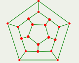
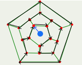

Today was the first lecture of "Algorithms and Programming", which is part of the module "Algorithms and Datastructures". As it is with most lectures in the first week, we mainly talked about organizational stuff. That's probably not interesting at all for anyone besides myself so you might aswell skip this.
Links:
- Course Website: mytuc.org/smzl
- Opal Page: mytuc.org/lyph
- Complete script: AuP-Skript
- Rated excercise submission: Opal Link
There's accompanied programming on tuesdays and a Q & A session on wednesdays.
Besides the script, there will be slides to each lecture that are uploaded on the course website. There will be optional training excercises as well as rated exercises. Success in the rated exercises, may provide 10% bonus points for the written test at the end of the semester. In my case the written test is a required pre-exam to the final examination which will happen in the summer semester in the lecture Datastructures.
However I'll still do the rated exercises, as well as the training exercises (when they're useful) to practice more.
The first one of these is an essay (lol) about a (personal) pioneer in the field of computer science. I've picked David Heinemeier Hansson (short dhh). I don't include the essay here because it needs to be in German anyway :P.
Todays small exercises were:
Have a look at the following number sequence: 9 44 32 12 7 42 34 92 35 37 41 8 20 27 83 64 61 28 39 93 29 17 13 14 55 21 66 72 23 73 99 1 2 88 77 3 65 83 84 62 5 11 74 68 76 78 67 75 69 70 22 71 24 25 26
a) Cross out as little as possible numbers to still have an increasing sequence.
b) Do it again but this time the sequence should be decreasing.
c) Describe the required steps to find an optimal solution for these tasks for any number sequence.
Find a connected and closed (start=end) way in the following pentagon structure so that every dot is visited one time only (not all green lines need to be used):

My solution:
